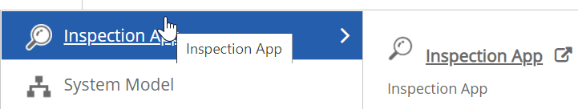
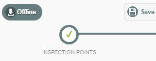
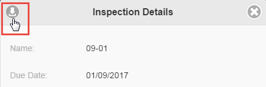
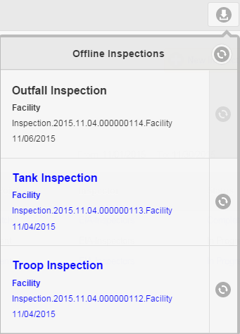
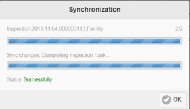
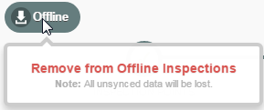
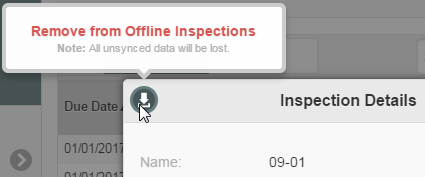

If you will be conducting a field inspection offline, you will need to create or start the inspection first with an online connection. Once the inspection has been started, it will be automatically cached for offline use. You can then disconnect and complete the inspection offline. You may also create Corrective Actions while offline. Be sure to save your progress as you go, to save any changes to your cache. Once internet connection is restored, you can sync the cached inspection records with the online database.
Before working offline, you should bookmark the app in your browser.
To bookmark the InspectionApp for working offline:
From the main menu button, hover over the InspectionApp, then from the right pop-out menu click the icon to open the app in a new tab.

You will then be able to open the app in offline mode and access any inspections that you have added to your offline cache. When internet connection is restored, the system will automatically switch to online mode and request sign-on.
Corrective actions cannot be completed offline and then synced. You will need to complete all corrective actions while connected.
Documents and pictures cannot be uploaded while offline. If you need to attach documents or pictures to inspection questions, save your progress on the inspection form but do not mark it complete until you have had an opportunity to upload the files when connected.
You can also use a Quick Link from in the Portal to go to the InspectionApp in either online or offline mode. (Inspections must be started first in online mode, in order to cache them.) For info on configuring a link to the InspectionApp, see InspectionApp Quick Link.
Save an existing inspection to your cache by one of the following methods:
When you start a new inspection, the inspection is automatically cached for offline use. The green Offline button indicates that the inspection has been cached. Be sure to save as you go to keep any changes.

If you do not want the inspection cached, select the Offline button and press Remove from Offline Inspections.
If you want to cache an existing inspection that has already been started or completed, select the cache icon top left in the Inspection Details pop-up dialog.

The button will be gray if it is not cached, and blue if it is already cached. Or click Go to This Inspection and the inspection will automatically be cached for you.
Inspections that are modified while offline must be synchronized to save any offline edits to the system. Cached Inspections are visible in the Offline Inspections list.
Clearing the cache in your browser before syncing data will cause loss of any saved data created offline.
To sync inspection records:
Click the Sync button next to an inspection to sync the changes to the online database. Click the Sync button at the top of the dialog to sync all.

The Synchronization dialog shows the progress. Any errors will be noted. When it is finished, click OK. Failed inspection records may be re-submitted if necessary.

To remove an inspection from the cache, do one of the following:
From the inspection completion form, select the Offline button, then click Remove from Offline Inspections.

From the Inspection Details pop-up, select the cached button top left, then click Remove from Offline Inspections. Any un-synced data will be lost.
